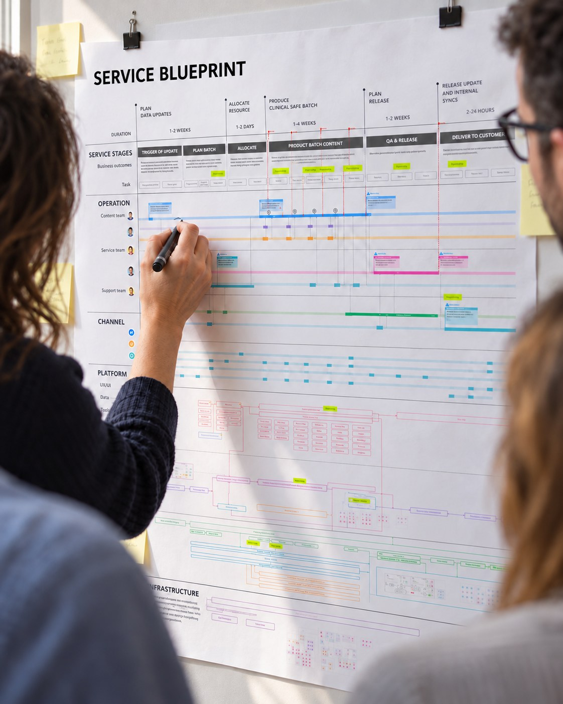

From 10+ legacy systems to one modern publishing service.
I led the service design that redefined the future publishing service, aligning business, data and architecture around a clear North Star, then carried it through experience architecture and a UX roadmap into implementation.

- My role
- Transformation & User-Centred Design Lead
- Type
- Consulting + Delivery (2023–2024)
- Legacy
- 10+ legacy systems on the retirement path
- Focus
- Publishing service · Operating model · Legacy migration · Adoption
- Design
- Service model · Experience architecture · UX roadmap · UX/UI design
- Research
- Stakeholder interviews · Process modelling · Co-design workshops
What I did, in four moves
-
01 ChallengeSituation
The programme was replacing technology without defining the service.
It was framed as a systems replacement, with 10+ legacy systems and many manual processes. Without a shared view of how publishing should work, priorities diverged and the programme stalled.
I reframed it around the publishing service and what users needed to achieve.
-
02 DefineTask
Use service design to define the future service model.
I mapped user and operational needs, content flows, governance and safety requirements, and aligned the model with data and technical architecture.
A shared North Star for the transformation.
-
03 ArchitectAction
Turn the service model into a North Star experience architecture.
- End-to-end journeys
- Information architecture
- Key workflows
- Interaction patterns
A clear structure for product and design teams to build from.
-
04 DeliverResult
Create the UX roadmap and guide design into implementation.
I translated the North Star into a phased UX roadmap, then guided detailed UX/UI design through implementation, aligned with the service model and architectural constraints.
90%+ adoption in the first rollout, with 20+ manual templates retired.
From fragmented systems to a modern publishing service
The design progression I led
- Current service10+ systems, manual processes
- Future service modelEnd-to-end publishing service
- Data & architecture alignmentContent, data, systems
- North Star experience architectureJourneys, IA, workflows
- UX roadmapPhased design and delivery
- Detailed UX/UI designKey flows and components
- ImplementationIterative delivery and adoption
- ServicePeople · process · content · governance
- ExperienceJourneys · workflows · IA · interaction · design system
- TechnologyData · systems · platform · architecture
What I owned
- Reframed the programme around the future publishing service
- Defined the future-state service model through service design
- Aligned service design with data and technical architecture
- Created the North Star experience architecture
- Translated the service model into UX and UI direction
- Created the phased user-experience roadmap
- Guided detailed UX/UI design through implementation
- Maintained design coherence from strategy through delivery
How I worked
- Stakeholder interviews
- Service blueprinting
- Current / future-state mapping
- Operating model design
- Co-design workshops
- Process modelling
- Experience architecture
- Design principles
- Outcome & measure framing
- Roadmap planning
- UX/UI design
- Change & adoption planning